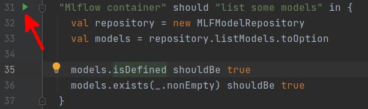
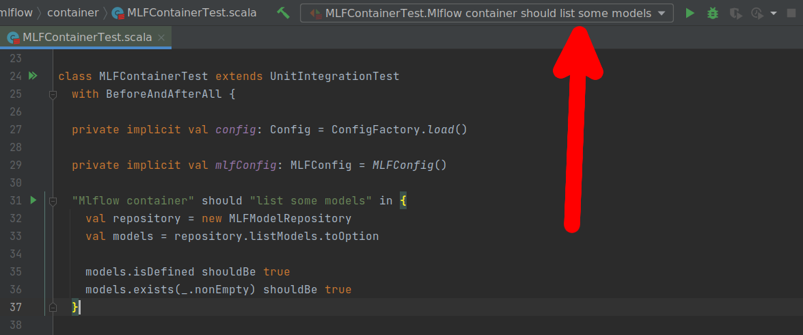
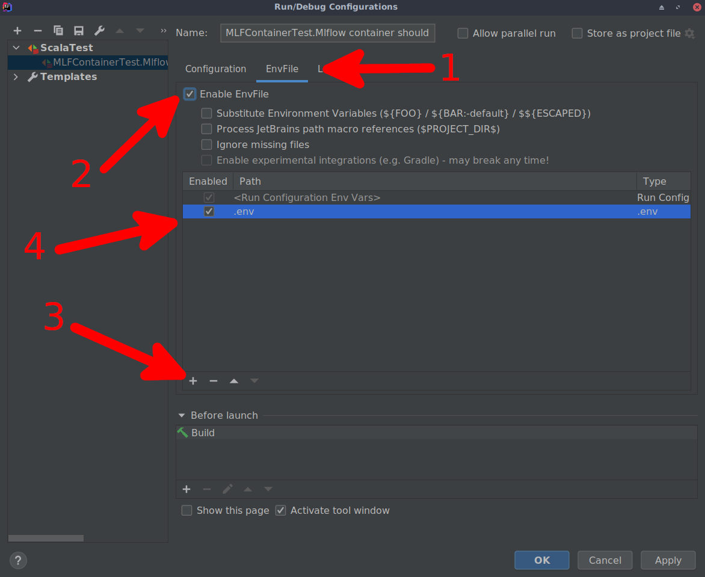

Compile and run tests
Docker image access
In order to run tests, custom docker images are needed. They can be build locally, but they are also available on the GitHub Dockerhub repository. Inorder to use the Docker images from this repository one need to be logged. Follow the official guidelines from GitHub to login to your account.
Repository location
Before trying to run tests locally one have to define the environment variable that will point to root folder of this repository as an absolute path on file system. It is needed as running the tests from IDE have the other relative home path than when running on CI pipeline. This can be done from terminal by running
export REPOSITORY_ABSOLUTE_ROOT=$(pwd)
from repository root folder or by defining the environment variable in the IDE with proper absolute path to repository root.
Command line
Tests can be easily run using the sbtwrapper and the commands the same as in the unit_tests.yaml
file so for example to run MLflow integration tests one would use the command
./sbtwrapper prinz_mlflow/test
Intellij IDEA
There is a possibility to run the tests in the IDE and debug them step by step. In order to have the environment properly configured the extra EnvFile plugin is needed.
Download the plugin and try to run selected test by clicking the green arrow near the code numbering 
When running test fails with the message containing
services.proxy.ports value [':', ':', ':'] has non-unique elements
(which means there are non-configured env variables which should be filled before setting the environment) the test configuration is generated in IDE and is accessible in the top of your IDE 
In order to run test one need to edit generated configuration with downloaded plugin by entering the configuration setup and selecting the .env configuration file available in the repository 
After adding this configuration file with environment definition running test should be possible from the IDE.